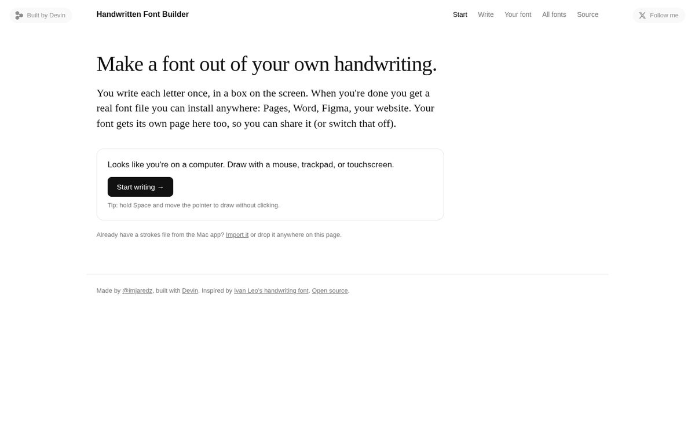
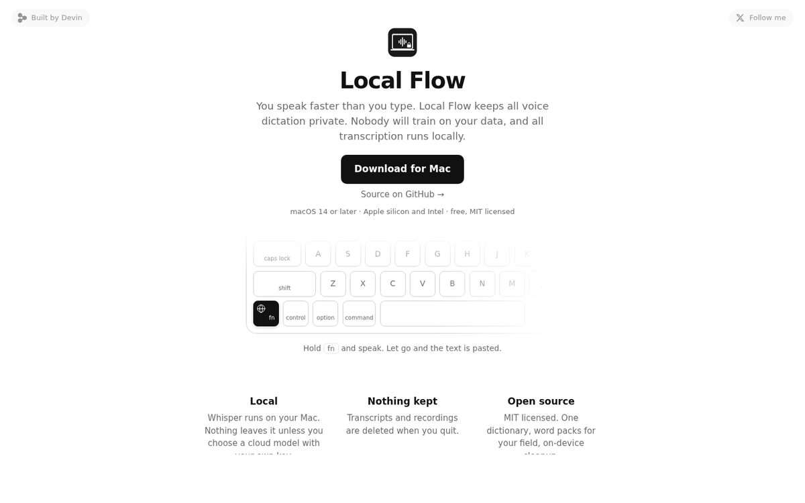
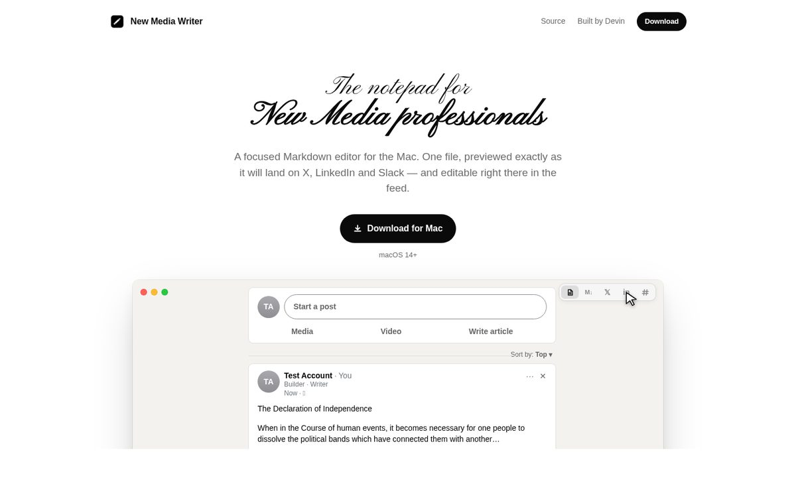
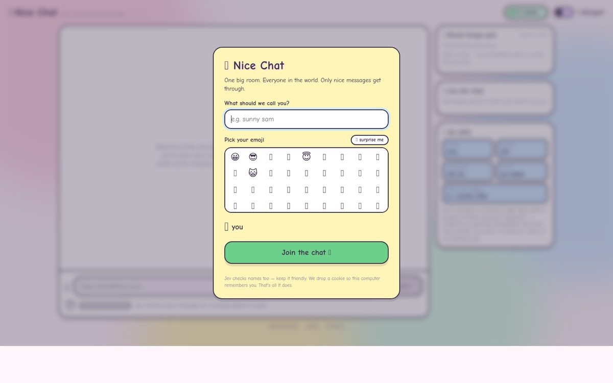
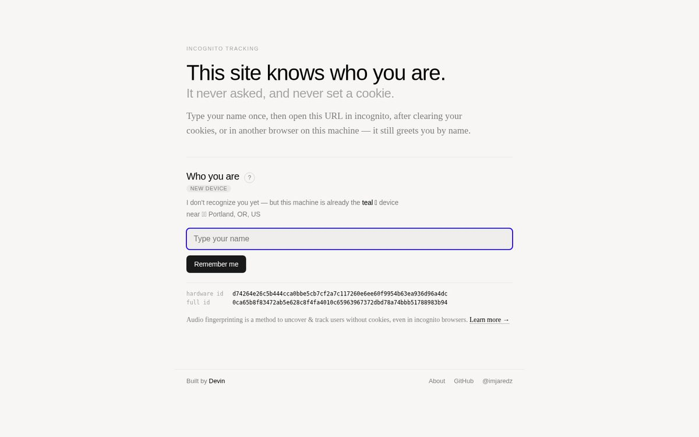
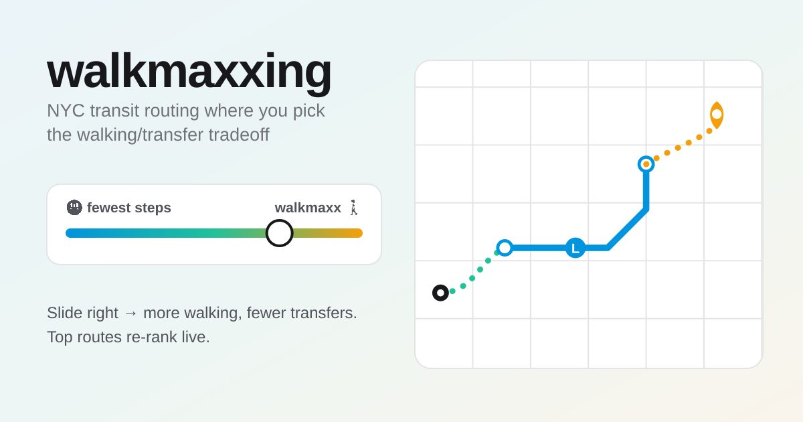
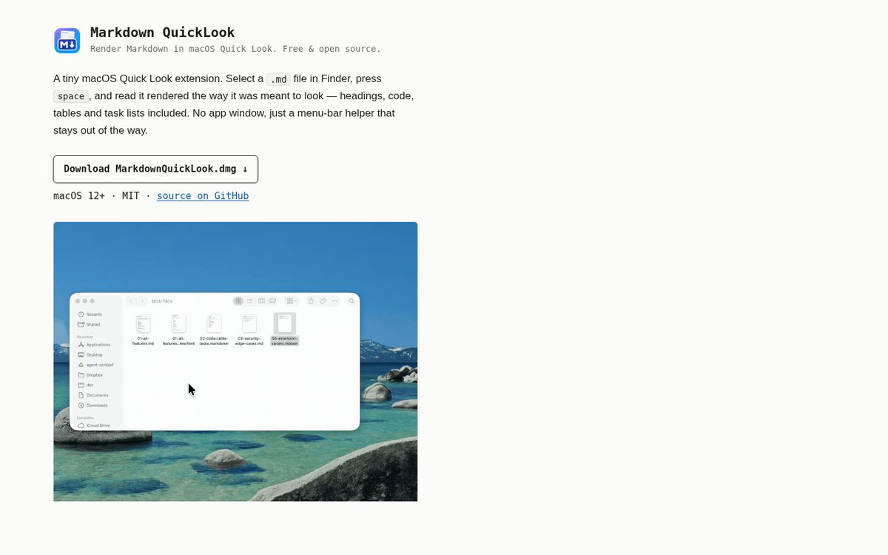

Write a few letters, get a real font file in your handwriting.

Private voice dictation for Mac. Open source, runs Whisper on your machine. (GitHub)

Markdown notepad for Mac that previews your post as it will look on X, LinkedIn, and Slack. (GitHub)

One chat room for the whole world. Only nice messages get through. (GitHub)

A page that still knows who you are in incognito. No cookies, no login, no permission prompt. (GitHub)

NYC subway directions with a slider for how much you want to walk. (GitHub)

Press spacebar on a .md file in Finder and see it rendered. (GitHub)
